User Instructions
Adapter UI Installation Instructions
Streaming Data
The data adapter library is located at:
C:/repos/mfi-ddb_library
Inside this directory, you will find a README file containing the currently installed version and troubleshooting information if you encounter issues.
Creating a New Connection
Connections are created through the webpage interface.
Step 1 – Landing Page
When you open the UI, you will be taken to the Landing Page. This page displays the Data Adapters section. If there are no active connections, it will show the message “No active adapter connection” along with a prompt to click + New Adapter. The + New Adapter button in blue is located at the top-right corner, which you will click to start creating a new adapter. The server status is shown in the top-right corner (red indicates offline, green indicates online).

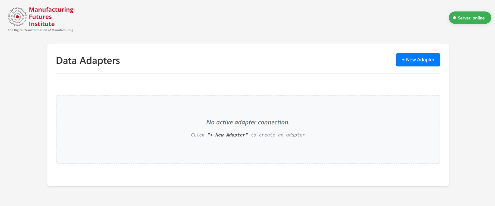
If no adapters are connected, the page will display the message: “No active adapter connection” along with a prompt to create one.
Step 2.1 – Adapter Configuration
Clicking New Adapter opens a pop-up window where you can configure your connection:
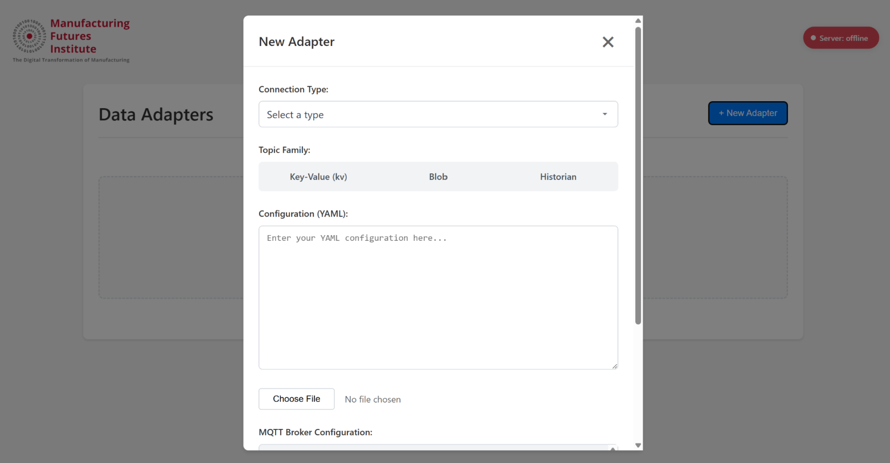
Connection Type: Choose from a list of supported adapters.
Topic Family: Select the topic family for the data stream.
Configuration(YAML):
Automatically populated for some adapter types (e.g., MTConnect defaults to Historian topic family).
Editable so you can adjust it for your device or streaming needs.
You have two ways to provide the YAML configuration:
Edit the text directly in the input box.
Upload a YAML file from your computer.
The configuration is validated in real-time. Only valid configurations enable the Save button.
Step 2.2 – MQTT Broker Configuration
Below the YAML configuration, you will find the MQTT Broker Configuration section.
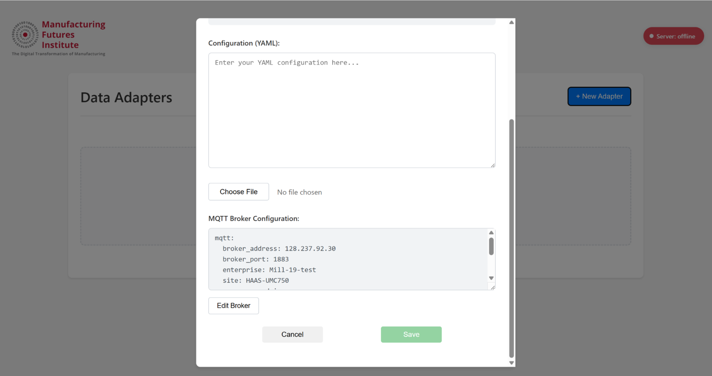
This section is pre-filled with default broker details used for data streaming.
You can modify the broker address, port, enterprise/site information, credentials, and security settings (e.g., TLS) to match your environment.
Once both the YAML and MQTT configurations are valid, click Save to connect the adapter.
Step 3 – Example: MTConnect Adapter
If you select MTConnect as your adapter type from the dropdown:
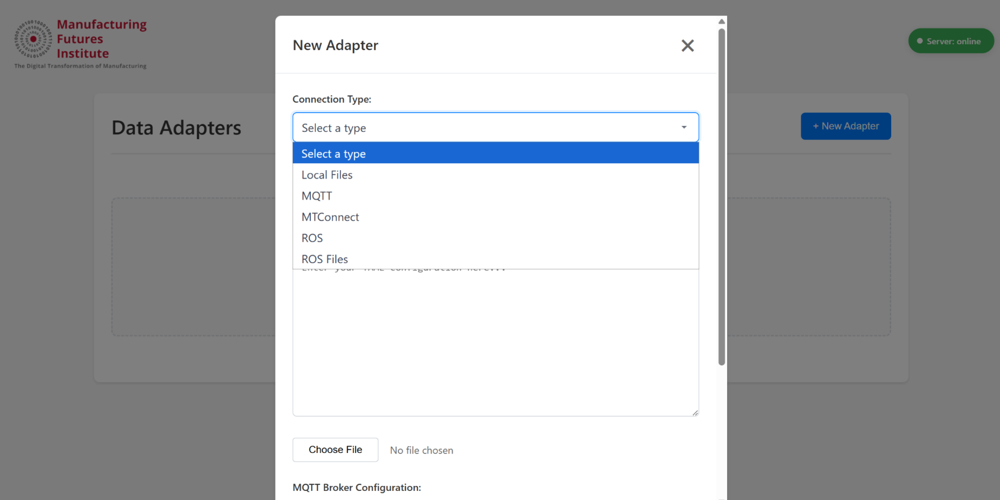
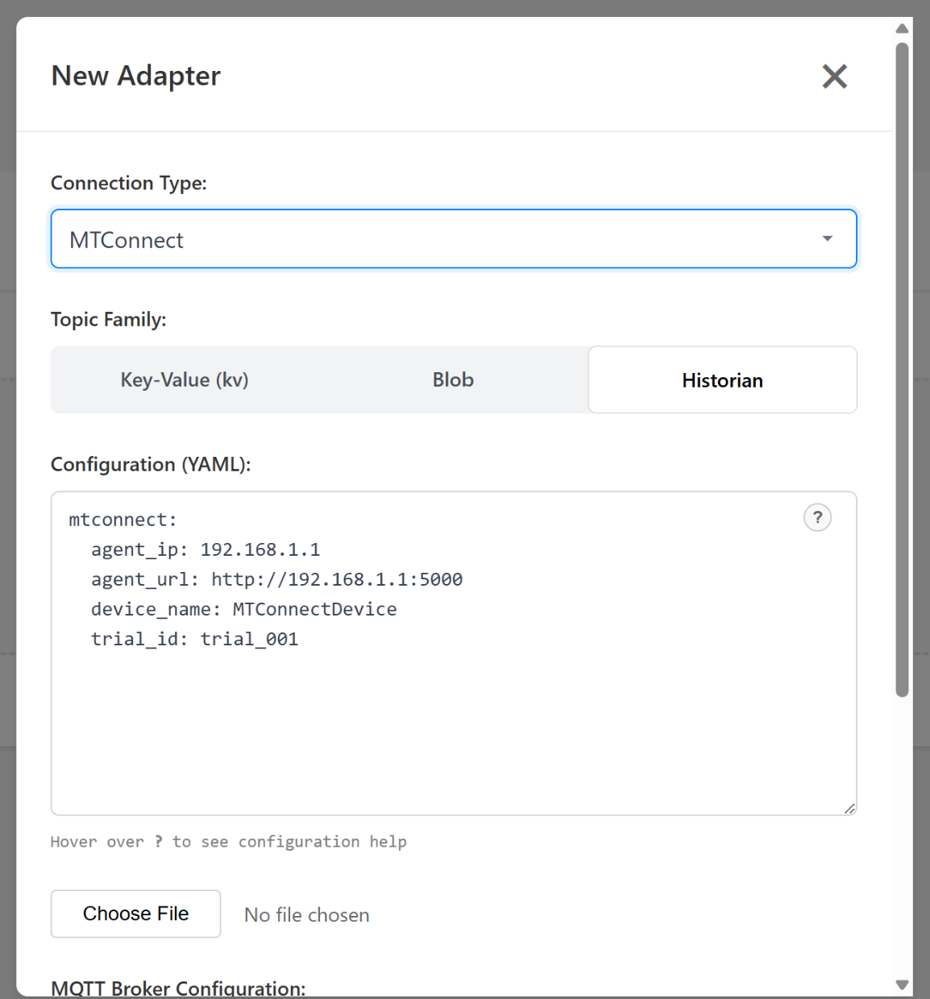
The Topic Family will be set to Historian by default.
The Configuration (YAML) will be automatically populated with MTConnect-specific fields such as:
agent_ipagent_urldevice_nametrial_id
You can edit these fields to match your MTConnect agent setup.
A Config Help icon (question mark) is available — tooltip will explain what each MTConnect field does and how to fill it.
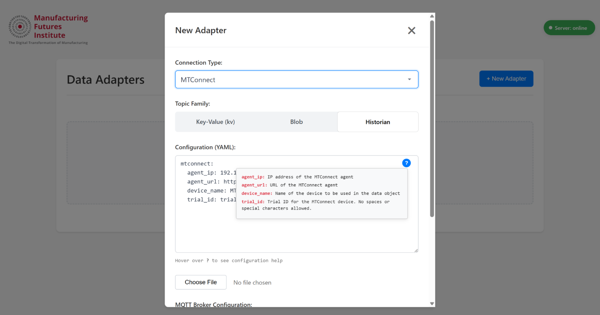
Once configured and saved:
The system will validate the MTConnect configuration.
It will establish the connection to your MTConnect agent.
Data will begin streaming via the configured MQTT broker.
The adapter will appear on the landing page, and the status indicator will turn green when streaming is active.
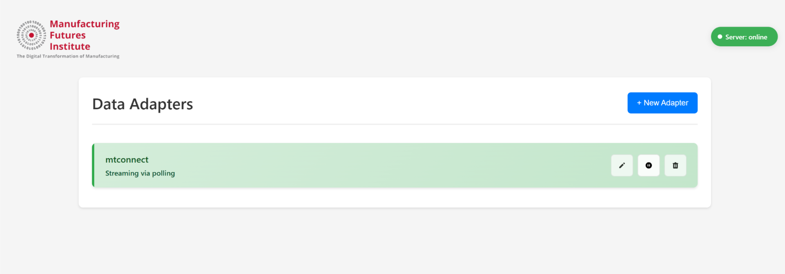
You can similarly add “N” number of connections and stream them at once.
Actions on a Connected Adapter
Once an adapter is connected and streaming, you can perform the following actions directly from the landing page:
Each action button is available in the adapter card on the landing page, so you can manage connections without navigating away.
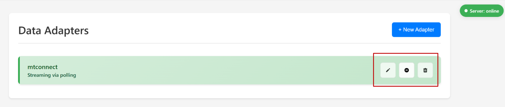
Edit – Reopen the configuration modal to update the YAML or MQTT broker settings.
Pause – Temporarily stop data streaming without disconnecting the adapter.
Resume/Play – Restart streaming after it has been paused, using the existing configuration.
New Adapter
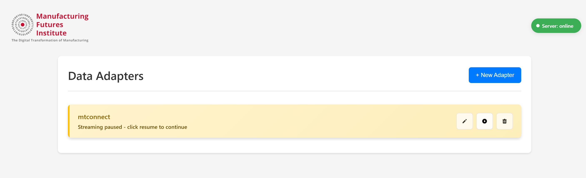
Delete – Disconnect the adapter and remove it from the active connections list.
Delete Adapter
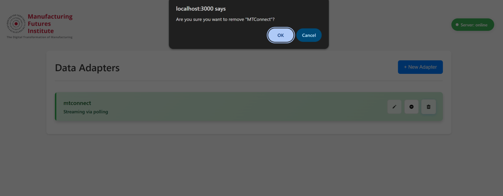
Delete would remove the adapter from the list but wont affect the streaming of other adapters in the list
Error Handling
When the server goes down you see :
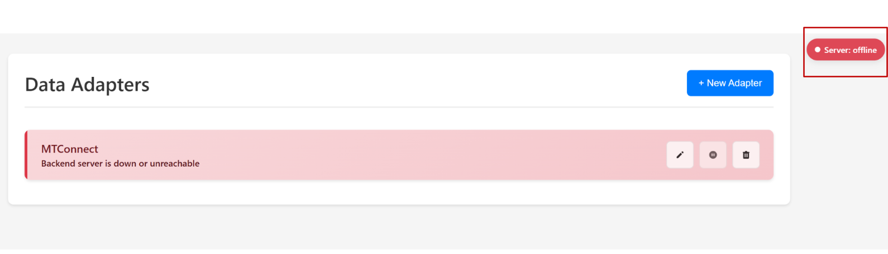
At times when the adapter can’t be reached, UI throws an “Adapter not connected” error. Check logs to catch the issue.